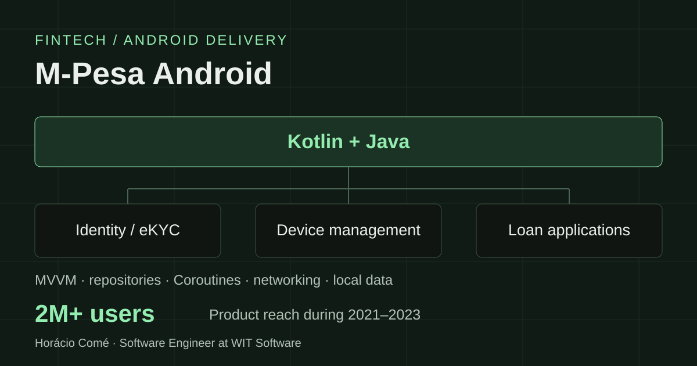

Android case study · Fintech
Building Android features for M-Pesa.
Kotlin and Java feature development for production mobile-money products, spanning electronic identity verification, device management, and loan applications.
- Role
- Software Engineer
Android feature development - Organization
- WIT Software
Coimbra, Portugal - Period & status
- Aug 2021–Dec 2023
Completed employment

The product context
At WIT Software, I built Android features for M-Pesa mobile products serving over 2 million users. My work was part of large-scale fintech systems, where identity, device, and financial flows are used in everyday mobile-money activity.
Delivery spanned five national markets: Mozambique, Lesotho, Tanzania, the Democratic Republic of the Congo, and Ghana. The work involved contributing to existing production applications and their established Android architecture.
What I contributed
- Electronic Know Your Customer (eKYC). Built Android features for electronic identity-verification flows.
- Device management. Implemented features related to managing devices within the mobile products.
- Loan applications. Developed Android functionality for lending flows.
- Application integration. Implemented Kotlin and Java features using MVVM, repositories, Coroutines, networking, and local persistence.
Working within a production Android architecture
Feature work across presentation and data
My contributions used Model–View–ViewModel (MVVM) and repository patterns. Feature development included Android presentation logic, asynchronous work with Coroutines, network integration, and local data persistence.
Kotlin and Java in an existing codebase
The work crossed both Kotlin and Java components. It required implementing features within the conventions and boundaries of a large mobile-money application, alongside other engineers.
Delivery and scope
- Features delivered in production mobile-money appsWork covered identity verification, device management, and loan applications.
- Products serving over 2 million usersThis figure describes product reach during my time at WIT Software, August 2021 to December 2023.
- Experience across five national marketsAndroid delivery for Mozambique, Lesotho, Tanzania, the Democratic Republic of the Congo, and Ghana.
Technical scope
Technologies: Kotlin, Java, Android, MVVM, repositories, Coroutines, networking, and local persistence.
Responsibilities: Android feature development and integration in production fintech applications.